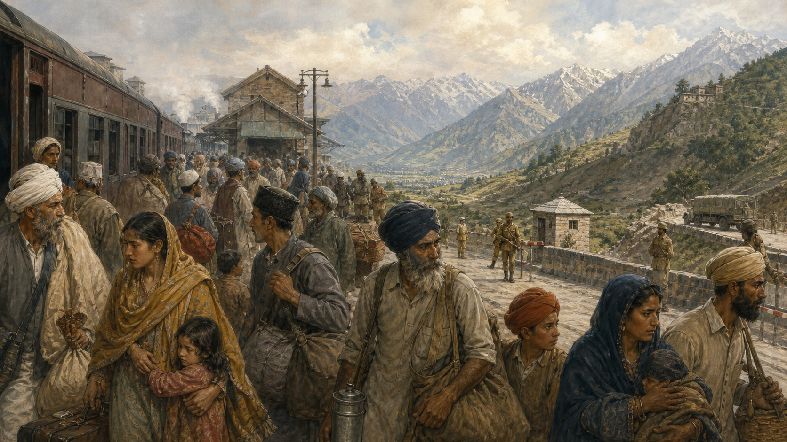

关键地点关系
1947年10月的一个清晨，斯利那加近郊的苹果园结了薄霜。十五岁的祖尼把几件衣服塞进布包，母亲却把铜壶又放回架上，说只是去亲戚家躲几天。道路上传来卡车和脚步声：土邦西部发生反抗，来自巴基斯坦方向的部族武装越过边界，王公的军队在后退，传言比人跑得更快。没有人知道，英属印度的“分家”会不会把克什米尔也一刀切开。祖尼一家后来回到家，但山谷之外，许多家庭再也没回到原来的村庄。

先把“克什米尔”从一个词展开
许多新闻把克什米尔说成一块山谷，其实历史上的查谟和克什米尔土邦包含差异巨大的地区：人口以穆斯林为主、语言和文化独特的克什米尔谷地；宗教和地形更多样的查谟；高寒、以藏传佛教和什叶派穆斯林社群为主的拉达克；今天由巴基斯坦管辖的阿扎德查谟和克什米尔及吉尔吉特—巴尔蒂斯坦；东北还有由中国控制、印度主张权利的阿克赛钦等区域。一个总称之下，并没有单一地形、宗教或政治愿望。
19世纪中叶，英国在第一次英锡战争后通过1846年《阿姆利则条约》，把一大片山地的统治权交给多格拉王公古拉卜·辛格。王朝信奉印度教，臣民多数为穆斯林。土邦不是现代民族国家，它把不同山谷、贸易路线与族群纳入君主统治。赋税、土地关系和政治代表不平等，逐渐催生反抗。1931年的抗议及镇压成为现代克什米尔政治记忆的重要节点，后来出现谢赫·阿卜杜拉领导的全国会议等组织。
这里还必须区分宗教认同和政治选择。一个穆斯林居民不必然支持加入巴基斯坦，一个印度教徒也不必然支持印度政府所有政策；有人主张独立，有人重视地区自治，有人首先关心土地、工作与安全。把复杂愿望压缩为“印度教对穆斯林”，会看不见阶级、地域、语言、国家政策和代际经验。
地图不能替居民回答
1947年前的土邦边界能告诉我们王公名义上统治哪里，却不能证明今天每个居民想归属谁。人口普查、选举结果、抗议和访谈也各有局限。政治立场会随战争、治理和个人经历变化，没有一张历史地图能永久代替人的同意。
英帝国离开时，时钟跑得比人快
1947年，英国决定结束对印度次大陆的殖民统治。印度国大党主张一个以世俗宪政为基础的统一印度；穆罕默德·阿里·真纳领导的穆斯林联盟担心穆斯林在多数民主中长期处于弱势，推动建立巴基斯坦。英国议会通过《印度独立法》，英属印度被分为印度和巴基斯坦。旁遮普与孟加拉被切开，边界公布前后发生大规模迁徙与屠杀，约千万级人口跨越新边境，死亡人数因资料和口径不同而有很大估计区间。
边界委员会只有很短时间划线，许多普通人直到独立后才知道家园属于哪一国。殖民政府仓促撤离、政党动员、社区恐惧和地方报复共同造成灾难，不能简单归罪于某一种宗教“天生仇恨”。许多地方也出现邻居保护邻居、车站人员救援难民的行动。暴力与互助同时存在，提醒我们群体标签不能解释每个人。
查谟和克什米尔的王公哈里·辛格是印度教徒，臣民多数为穆斯林。他起初不愿立即加入任何一国，希望保持独立，并与巴基斯坦签署维持既有交通、邮政等安排的协议。可是土邦内部已经动荡：西部蓬奇地区出现反抗，查谟发生针对穆斯林的大规模暴力和迁徙，来自西北边境的普什图部族武装随后进入土邦。不同叙事对这些事件的组织者、规模与先后责任强调不同，但平民受难是不可抹去的事实。
父子暂停一下：仓促是中立的吗？
英国可以说，最后的杀戮由当地力量实施；当地领导人也可以说，殖民统治留下了制度和边界难题。如果一个掌权者知道撤离会制造巨大风险，却仍用极短时间交接，它应承担什么责任？责任能否由多个行动者同时承担，而不是只找一个罪人？
一份加入文件，与第一场战争
1947年10月，部族武装向斯利那加推进，在巴拉穆拉等地发生抢掠和杀戮。哈里·辛格向印度求援。印度方面要求土邦先正式加入。王公签署《加入文书》，印度总督蒙巴顿接受，印度军队空运进入斯利那加。印度据此认为加入合法完成；巴基斯坦质疑王公在民众反抗和战争中作出的决定，认为穆斯林多数地区理应加入巴基斯坦，并对印度所述程序与文件背景提出争议。
蒙巴顿接受加入时的信件提到，待秩序恢复后应由人民意愿确认归属。印度领导人也曾公开谈到公民投票。对印度而言，投票须在巴基斯坦支持的力量撤出后进行；对巴基斯坦而言，印度的军事与政治控制使条件不公。此后双方围绕“谁应先做什么”不断争执。承诺没有变成一次真正覆盖全地区、被各方接受的投票。
第一次印巴战争持续到1948年。印度把问题提交联合国。安理会第47号决议提出停火、撤军与公民投票的分阶段设想，要求巴基斯坦方面确保部族人员和非当地作战者撤出，随后印度逐步减少军力，在和平秩序下举行投票。它是一项建议性框架，不是自动执行的按钮；双方对前提、先后、最低驻军与行政权安排无法达成一致。
1949年1月停火生效。同年《卡拉奇协定》画出停火线，联合国军事观察员参与监督。它不是经过居民公投的国际边界，而是军队停止前进的位置。祖尼一家所在的谷地留在印度一侧，另一些家庭和牧场在另一侧。线条穿过山脊，也切断道路、亲缘与季节性迁徙。
一座桥如何一点点失去承重
印度宪法第370条为查谟和克什米尔规定特殊安排，使其拥有自己的宪法和一定自治空间；第35A条后来赋予当地立法机构界定“永久居民”及相关权益的能力。支持者把自治看作加入印度时的承诺与多样性保障；批评者认为它妨碍全国法律平等适用、加深分离感，也可能使部分群体在继承和居住权上受不公平待遇。
1953年，主张较大自治的地方领导人谢赫·阿卜杜拉被解除职务并拘押。此后数十年，印度总统令把越来越多中央宪法条款延伸到当地。印度政府及支持者认为这推动整合与治理，许多克什米尔人则把它记作自治被逐步掏空。选举也并非一直具有同样可信度：有时期政党竞争和参与真实存在，有时期中央干预、反对者受限或舞弊指控严重。
1965年，印巴再次爆发战争，战火包括克什米尔。1971年战争主要围绕东巴基斯坦危机，最终诞生孟加拉国；战后印度与巴基斯坦签署1972年《西姆拉协定》，把原停火线调整并称为“控制线”，承诺通过双边和平方式处理分歧。印度据此强调克什米尔应由印巴双边解决；巴基斯坦仍强调联合国决议与克什米尔人的自决权。联合国观察组继续存在，但印度认为其在《西姆拉协定》后任务已失去意义，巴基斯坦则继续接受其作用。
印度国家叙事
王公签署加入文件，查谟和克什米尔依法成为印度一部分；问题核心是跨境武装、恐怖主义和国家领土完整，自治与选举应在印度宪法框架内处理。
巴基斯坦国家叙事
穆斯林多数地区在分治逻辑下应与巴基斯坦相连，加入过程缺乏人民同意；联合国所谈的自决尚未实现，克什米尔是未完成的分治议题。
两种国家叙事都能引用真实文件，却都不能自动代表所有克什米尔人。有谷地居民支持独立，有人支持巴基斯坦，有人接受印度宪政但要求自治；查谟、拉达克、吉尔吉特—巴尔蒂斯坦和流离失所社群又有不同诉求。如果只让新德里和伊斯兰堡说话，故事的主人公仍坐在门外。
1989以后，枪声进入日常生活
1987年当地议会选举被广泛指控操纵，许多年轻人对通过选票改变政治失去信心。到1989年前后，武装叛乱扩大。参与者目标并不一致，有的主张独立，有的主张加入巴基斯坦。巴基斯坦向部分武装组织提供支持、训练或庇护，印度则部署大量安全力量，以反叛乱和反恐名义行动。
普通人被夹在多重恐惧之间。武装组织暗杀官员、政治工作者和被视为合作者的人，也发动针对平民的袭击。安全部队面临伏击和爆炸，同时被人权组织指控任意拘押、失踪、酷刑、过度使用武力与缺乏问责。印度政府强调武装暴力和跨境渗透的严重性，并认为特殊安全法律是保护居民所需；批评者则指出，长期不受充分制衡的强力措施会制造新的怨恨。
1990年前后，克什米尔潘迪特社群——谷地中主要信奉印度教的少数群体——在威胁、暗杀和恐惧中大规模离开家园。究竟谁组织了全部驱逐、政府是否失职甚至利用撤离，不同政治叙事争论激烈；但一个不可争辩的结果是，许多家庭在营地和外地生活数十年，失去邻里、房屋和故乡。与此同时，大量穆斯林家庭也在枪战、拘押和报复中失去亲人。承认一群人的创伤，不需要否认另一群人的创伤。
数字为什么总在争论
死亡、失踪、流离失所人数来自政府、医院、组织和家庭清单，分类标准不同：是否计入武装人员、是否跨越年份、失踪者如何处理，都会改变总数。对仍有争议的伤亡，负责任的写法应说明来源和口径，而不是选一个最大或最小数字证明立场。
学校停课、宵禁、检查站和通信中断改变了成长经验。一名学生可能既害怕武装分子招募，也害怕夜间搜查；一名士兵可能刚成年，被派到不熟悉语言的村庄，担心每辆车藏有炸弹。解释双方恐惧，不等于把掌握国家强制力的一方与非国家武装的法律责任说成完全相同，而是帮助我们看见暴力如何自我延续。
控制线没有控制住危险
1998年，印度和巴基斯坦先后进行核试验，克什米尔争端从此更明显地笼罩在核阴影下。有人认为核武器让全面战争代价太高，从而形成威慑；也有人指出，它可能让一方误以为可以在核门槛以下支持有限冲突。1999年卡吉尔冲突正是在两国公开拥有核武器后发生：越过控制线的武装人员和巴基斯坦部队占据高地，印度发动军事行动夺回，多国外交施压促成撤回。
2001年印度议会遇袭、2008年孟买袭击、2016年乌里袭击、2019年普尔瓦马自杀式袭击，都让印巴关系急剧紧张。有关组织与责任的证据应逐案判断，不能把整个民族或宗教与袭击画等号。国家有保护公民、依法追责的义务，同时也有义务区分战斗人员和平民，避免集体惩罚。
控制线沿线的村民最清楚“有限交火”并不有限。炮弹落下时，学校地下室变成避难所，耕地可能因地雷或射击无法进入，婚礼和葬礼被边界阻断。2003年的停火曾显著减少交火，跨控制线巴士和贸易一度让分离家庭重逢。2019年后这些联系受限，2021年两国军方重申停火，又让沿线获得一段相对安静时间。和平不是只有首都签署大协议，也可能是农民终于能在白天走进果园。
父子暂停一下：核武器带来和平了吗？
印巴拥有核武器后没有再发生长期全面战争，却出现卡吉尔冲突、危机动员和多次越境打击。如果“没有全面战争”就算成功，威慑似乎有效；如果普通人仍周期性承受炮火，答案又不同。你会用什么尺度判断安全？
特殊地位被取消之后
2019年8月5日，印度政府通过总统令和议会行动，使宪法第370条的大部分特殊安排停止生效，并通过《查谟和克什米尔重组法》，把原邦拆分为两个中央直辖区：查谟和克什米尔、拉达克。行动前后，当地主要政治人物被拘留，通信受到长时间限制，安全部署加强。政府称这些措施用于防止暴力，并主张全面适用印度宪法能够推动权利平等、投资、反腐和发展。
反对者认为，中央在当地没有民选邦议会、且严格限制公共表达时改变其宪法地位，破坏联邦承诺和民主同意；他们也担心土地、就业和人口结构变化。巴基斯坦强烈反对并降低外交关系。支持取消的人则指出，特殊地位并未阻止腐败、家族政治和暴力，还让印度部分进步法律难以直接适用。两边都使用“权利”语言，却强调不同权利：全国平等，还是地方自治与程序同意。
2023年12月，印度最高法院维持2019年相关宪法行动，并要求尽早恢复邦地位、举行议会选举。该判决是印度现行法律上的权威结论，但法律有效不等于政治争议消失。2024年，当地举行十年来首次立法议会选举，选民参与使代议政治恢复一部分空间；民选政府在中央直辖区框架内运作，权限与完整邦仍不同。
发展数据同样需要小心。公路、隧道、旅游人数、投资承诺和公共服务改善可以衡量，却不能单独证明政治认同；安全事件下降值得重视，也不能抹去拘押、新闻自由与表达空间的争议。反过来，批评政治限制也不应否认居民对工作、教育和稳定的现实期待。一个社会可以同时想要面包、尊严、安全和发言权。
2025年，旧伤口再次发热
2025年4月22日，印度管辖克什米尔的帕哈尔加姆附近发生针对游客的严重袭击，平民被杀。联合国秘书长谴责袭击并强调应以可信、合法方式追责。印度指称存在跨境联系并对巴基斯坦采取外交和军事措施；巴基斯坦否认参与，双方随后发生导弹、无人机和炮火交锋。信息战与社交媒体谣言同时涌现，旧视频、游戏画面和未经证实的“战果”让公众更难判断。
5月10日，印度与巴基斯坦达成停止当轮敌对行动的安排。关于外部斡旋究竟发挥多大作用，双方公开叙述并不相同：美国领导人强调调停，印度强调双方军事渠道直接达成，巴基斯坦更肯定国际介入。可以核实的是停火发生了；“谁让它发生”则包含政治声誉竞争。把两者分开，是阅读当代新闻的基本功。
截至2026年8月，克什米尔的根本政治争议仍不能用一次停火概括。联合国驻印度和巴基斯坦军事观察组仍列为在役任务；印度与巴基斯坦继续坚持不同法律与政治立场；当地居民内部也没有单一答案。核武国家之间的升级风险、非国家武装的袭击风险、强力安全政策的人权风险，会彼此放大。
安全优先的逻辑
经历针对平民和安全人员的袭击后，政府若不能阻止渗透与惩罚组织者，就无法保护社会。边境管理、情报和必要武力是国家责任。
政治空间优先的逻辑
长期军事化、拘押和表达受限会削弱合法性，让年轻人更难相信和平政治。安全若不受法律制衡，也可能制造下一轮不安全。
这两种逻辑若各自走到极端，就会形成闭环：袭击使强力措施更受支持，强力措施带来的怨恨又被武装组织利用。打破闭环需要依法追责袭击者，也需要保护平民、媒体、司法和政治参与。解释这种机制不是把责任平均分配，而是寻找哪一环可以先停止。
夜谈之后，留下六个问题
- 王公签署的加入文件、居民的意愿和战争后的实际控制，哪一种应有最大权重？
- 一场未能举行的公民投票，在几十年后应如何理解其政治意义？
- 国家面对武装袭击时，怎样既保护公民又防止安全权力失去制衡？
- 地方选举能表达哪些意愿，又有哪些问题是它无法回答的？
- 核威慑避免了全面战争，是否足以称为和平？
- 如果最终主权问题短期无解，哪些“小步骤”最值得优先推进？
可靠来源与延伸阅读
- 英国《1947年印度独立法》：分治与权力移交的原始法律文本。
- 联合国安理会第47号决议（1948）：停火、撤军与公民投票框架原文。
- 联合国Peacemaker：《卡拉奇协定》（1949）：停火线的形成与监督安排。
- 联合国维和部：UNMOGIP任务页：观察组历史、职责与当前状态。
- 《西姆拉协定》（1972）联合国条约文本：控制线与双边和平解决原则。
- 印度《查谟和克什米尔重组法》（2019）：行政区划变化的法律原文。
- 印度内政部：2019年查谟和克什米尔决定说明：印度政府的官方理由与措施。
- 印度最高法院第370条判决（2023）：维持相关行动的完整判决。
- 联合国人权高专办：克什米尔人权状况报告（2018）：对各类侵害指控与调查限制的记录。
- 联合国人权高专办：克什米尔后续报告（2019）：印度与巴基斯坦管辖地区的更新。
- 联合国秘书长：2025年5月印巴局势讲话：谴责帕哈尔加姆袭击并呼吁克制。
- 联合国秘书长欢迎2025年5月10日印巴停火：当轮敌对行动停止的权威节点。